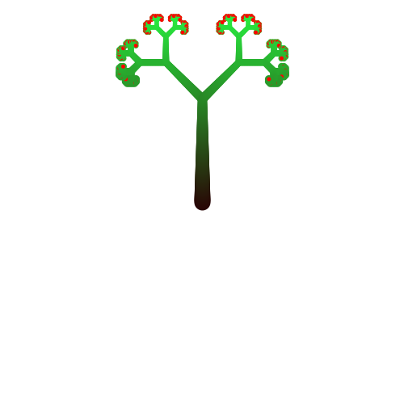

L-Systems
L-Systems
More about L-System: https://en.wikipedia.org/wiki/L-system
The main idea is that we have a sequence of variables and rules that we apply one by one and transform these variables to another ones. Like kid's game:
home -> mome mome -> meme ...
The implementation includes parameters of variables and dynamic parameters which idea is to create new parameters based on the parameters of matched variables (like \1 references in regexps).
Example of generated picture:

So, any "figures" are drawn by a set of rules. Most of such "systems" (sets) are "returnable", ie, it draws something then returns back to initial point (the root of the tree in this case), then the next leaf, etc. So, if we want to code a color and a width with variables' parameters then they should take into account that "the next" (i+1) can mean "more close to the root". So, rules in the tree in this implementation don't use parameters for color (more black on the root) and for the width/thickness - it uses a special method draw_attrs() (context manager actually) that is called before to draw and after (to set/reset attributes).
The implementation depends on svg_turtle (must be installed with pip). The code:
# The idea is to iteratively match variables and to replace them with another one, # step by step. Like A -> AB (where A,B are variables)... Finally it's unfolded # into some long sequence of variables that can be treated in some way (to draw # picture, to play music, etc). # More: https://en.wikipedia.org/wiki/L-system # # Parameters of variables are supported including dynamic ones (based on original, # matched variables, as references in regexp). But for color, width set they are # not used - context manager `draw_attrs()` is used instead of, because draw of # PythTree is as to-leaf/back-to-root, to-leaf/back-to-root... and in this case # colors would be black/white, black/white... not black/lighter/more-ligher/white. # So, the context manager calculates relative Y-coord (how far it's from the root) # and sets color/width. # TODO draw from the bottom of the screen # TODO support big number of iterations # TODO set thickness and color using `pars` import random import svg_turtle from contextlib import contextmanager ################################## L-System #################################### class DynPars: """Dynamic parameters: they can get parameters of matched variables and to transform them into parameters of new coming (tail) variables """ def __init__(self, new_pars=None): self.new_pars = new_pars or (lambda a: a) def tail_pars(self, tail_vars, matched_vars_pars): tail_vars_pars = list(self.new_pars(matched_vars_pars)) if len(tail_vars_pars) == 1: # XXX not sure tail_vars_pars = tail_vars_pars * len(tail_vars) # XXX not sure for i in range(len(tail_vars)): if i >= len(tail_vars_pars): break tail_vars[i].pars = tail_vars_pars[i] # print(matched_vars_pars, '=>', tail_vars) return tail_vars class Var: def __init__(self, name, pars=None): self.name = name self.pars = pars or [] def __eq__(self, oth): if self.name != oth.name: return False for i in range(min(len(self.pars), len(oth.pars))): if self.pars[i] != oth.pars[i]: return False return True @classmethod def make(cls, s, pars=None): """Short factory creating a list of Var-s: 1 letter in `s` is a name of 1 Var""" return [cls(ch, pars or []) for ch in s] def __repr__(self): pars = str(tuple(self.pars)) if self.pars else '' return f'"{self.name}"{pars}' class Rule: """Rule transforming head Var-s to tail Var-s""" def __init__(self, head, tail): self.head = head self.tail = tail @classmethod def make(cls, heads, tails, heads_pars=None, tails_pars=None): """Short factory: heads, tails are strings where 1 letter is one Var name""" return cls(Var.make(heads, heads_pars), Var.make(tails, tails_pars)) def match(self, vars): head_len = len(self.head) vars_len = len(vars) if vars_len < head_len: return {'matched': False, 'shift': 0} elif head_len == 0: return {'matched': True, 'shift': 1} elif all(self.head[i] == vars[i] for i in range(head_len)): return {'matched': True, 'shift': head_len} else: return {'matched': False, 'shift': 0} def __repr__(self): return f'{self.head}->{self.tail}' class Prefer: """How to select a rule when multiple rules matched""" FIRST = 1 LAST = 2 RANDOM = 3 class Lsys: def __init__(self, rules, axiom, dyn_pars=None): self.rules = rules self.axiom = axiom self.dyn_pars = dyn_pars def refer_pars(self, tail_vars, matched_vars_pars): if self.dyn_pars: return self.dyn_pars.tail_pars(tail_vars, matched_vars_pars) else: return tail_vars def apply_one_rule(self, vars, prefer=Prefer.LAST): """Applies one of known rules to input `vars`""" matched_rules = [] for rule in self.rules: match_res = rule.match(vars) if match_res['matched']: matched_rules.append((rule, match_res)) if len(matched_rules) > 1: if prefer == Prefer.LAST: matched = matched_rules[-1] elif prefer == Prefer.FIRST: matched = matched_rules[0] elif prefer == Prefer.RANDOM: matched = matched_rules[random.randint(0, len(matched_rules) - 1)] elif len(matched_rules) == 1: matched = matched_rules[0] elif len(matched_rules) == 0: matched = None if matched is None: matched_pars = [v.pars for v in vars[:1]] #print('1', matched_pars, len(vars[:1])) ret = {'applied': vars[0:1], 'rest': vars[1:]} else: matched_rule, match_res = matched new_vars = matched_rule.tail[:] matched_pars = [v.pars for v in vars[:match_res['shift']]] ret = {'applied': new_vars, 'rest': vars[match_res['shift']:]} if matched_pars: self.refer_pars(ret['applied'], matched_pars) return ret def apply_rules(self, vars, prefer=Prefer.LAST): """Performs 1 step of L-System: applies all rules on `vars` (input string) until the end of input string """ result = [] rest = vars[:] while rest: apply_res = self.apply_one_rule(rest, prefer) result += apply_res['applied'] rest = apply_res['rest'] return result def iapply(self, max_steps, prefer=Prefer.LAST): """Generates all transformations results""" vars = self.axiom[:] yield vars for step in range(max_steps): new_vars = self.apply_rules(vars, prefer) if new_vars == vars: break else: vars = new_vars yield new_vars return vars def apply(self, max_steps, prefer=Prefer.LAST): """Returns the last transformation result""" for r in self.iapply(max_steps, prefer): continue return r #################################### Render #################################### class IRender: """Render interface""" def __init__(self, lsys): self.lsys = lsys self.max_steps = 0 def do_render(self, step, new_vars): return NotImplementedError def do_syntax_check(self, vars): """Raise exception on error in `vars`""" pass def render(self, max_steps): self.max_steps = max_steps for step, new_vars in enumerate(self.lsys.iapply(max_steps)): self.do_syntax_check(new_vars) self.do_render(step, new_vars) class PythTree(IRender): """Pythagorean tree renderer using turtle interface""" ALPHABET = '[01]' def __init__(self, lsys, turtle, *, only_last_step=True, styles=None): super().__init__(lsys) self.turtle = turtle self.stack = [] self.only_last_step = only_last_step self.styles = styles or {} self.y0 = None # start of drawing, 1st point def do_syntax_check(self, new_vars): for var in new_vars: if var.name not in self.ALPHABET: raise RuntimeError(f'Unsupported variable {var.name}') def do_render(self, step, new_vars): draw = (not self.only_last_step) or (step == self.max_steps) if draw: self.turtle.pencolor(self.styles.get('branch_color', 'black')) self.turtle.screen.colormode(255) self.turtle.pendown() for var in new_vars: with self.draw_attrs(): self.interp_var(var) self.turtle.penup() @contextmanager def draw_attrs(self): y = self.turtle.ycor() if self.y0 is None: self.y0 = y self.turtle.screen.colormode(255) c0 = self.turtle.pencolor() w0 = self.turtle.width() color_step = abs(y - self.y0) c1 = [40, 5 + color_step, 5 + color_step/4] # current color w1 = 20 - abs(y - self.y0)/15 # current width self.turtle.pencolor(c1) self.turtle.width(w1) yield None self.turtle.pencolor(c0) self.turtle.width(w0) def interp_var(self, var): if var.name == '0': self.turtle.forward(2) c = self.turtle.pencolor() self.turtle.pencolor(self.styles.get('berry_color', 'red')) self.turtle.dot(5) self.turtle.pencolor(c) elif var.name == '1': self.turtle.forward(2) elif var.name == '[': pos, angle = self.turtle.pos(), self.turtle.heading() self.stack.append((pos, angle)) self.turtle.penup() self.turtle.left(45) self.turtle.pendown() elif var.name == ']': pos, angle = self.stack.pop() self.turtle.penup() self.turtle.setpos(pos) self.turtle.setheading(angle) self.turtle.right(45) self.turtle.pendown() ############################# # Test 1 ##rules = [Rule.make('A','AB'), Rule.make('B','A')] ##ls = Lsys(rules, Var.make('A')) ###r = ls.apply_rules(Var.make('ABAAB')) ##r = ls.apply(7) # WORKS ##print(r) # Test 2 ##rules = [Rule.make('1','11'), Rule.make('0','1[0]0')] ##ls = Lsys(rules, Var.make('0')) ###r = ls.apply_rules(Var.make('1[0]0')) ##r = ls.apply(3) # WORKS ##print(r) # Just example how to change parameters dynamically # def new_pars(old_pars): # for pars in old_pars: # if len(pars) == 4: # r, g, b, thickness = pars # res = [min(255, r+1), min(255, g+1), min(255, b+1), thickness+0.1] # yield res rules = [Rule.make('1','11'), Rule.make('0','1[0]0')] # Example of usage of dynamic parameters # ls = Lsys(rules, Var.make('0', [2,2,2,0.5])), DynPars(new_pars)) ls = Lsys(rules, Var.make('0')) t = svg_turtle.SvgTurtle(1000, 1000) def go(t, heading=90, pos=(0,0), styles=None): t.penup() t.setheading(heading) t.setpos(*pos) t.pendown() pt = PythTree(ls, t, styles=styles) pt.render(7) go(t) t.save_as('ls.svg')